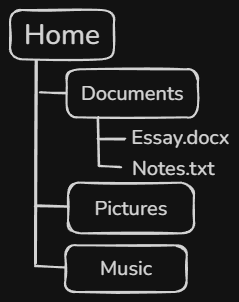

The File System is one of the most important subsystems in an Operating System. It's what keeps all the information in storage organized so that both the user and/or the OS can find what ever it is that they're looking for when it's required. But it does more than simply keep things organized. In fact, it has a whole permissions system for when a computer is shared by multiple users.

In the graphic depicted Above, "Home" is the parent directory. "Documents," "Pictures," and "Music" are subdirectories. The files "Essay.docx" and "Notes.txt" are stored within the Documents directory. File systems organize information into this hierarchy so that users can easily locate and manage their data. This is the core resposibility of the File System; keeping things organized and ready for quick reference. Literally like a digital file cabinet that can sort itself! This is, of course, only one responsiility of the file system.
The OS must also be able to determine who's allowed to access each file. This is especially important on computers that are shared by multiple users, such as family computers, school computers, or workplace systems. To accomplish this, OSs assign permissions to files and folders that dictate who may read, edit, or delete them. Imagine a folder name 'Homework' that contains assignments for several classes. As this folder's owner, you should be able to open, edit, and save each assignment as necessary. Another user of that same computer, however, shouldn't be able to modify ofr delete those same files without your permission. With File Permissions, the OS is able to enfors these rules by controlling who can read, modify, or remove files and folders.
All operating systems rely on their file systems to keep data organized accessible and secure. By arranging files into directories and controlling acces through permissions, the file system allows users to manage large amounts of information efficiently while protecting important data from accidental or unauthorized changes.